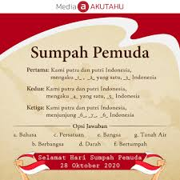

-
Beranda
-
Sejarah
Galeri
Sumpah Pemuda

Sumpah Pemuda Ikrar
Sumpah Pemuda merupakan ikrar kebangsaan yang dirumuskan melalui sebuah putusan Kongres Pemuda Kedua di Jakarta pada 27-28 Oktober 1928. Ikrar ini adalah pernyataan kebangsaan pemuda pemuda Indonesia dari berbagai latar belakang daerah, suku, dan agama, menyatukan keyakinan mereka bahwa tumpah darah, bangsa, dan bahasa persatuan: ialah Indonesia. Keyakinan itu lalu disebarluaskan untuk dijadikan asas bagi semua perkumpulan kebangsaan Indonesia setelah peristiwa Kongres Pemuda Kedua
Kongres Pemuda Kedua digagas oleh Perhimpunan Pelajar Pelajar Indonesia (PPPI), sebuah organisasi pemuda yang beranggotakan pelajar dari seluruh Indonesia. Kongres ini bertujuan untuk memperkuat rasa persatuan dan kebangsaan Indonesia yang telah tumbuh di dalam benak dan sanubari pemuda-pemudi. Sebelum kongres digelar, para pemuda mengadakan pertemuan terlebih dahulu pada 3 Mei 1928 dan 12 Agustus 1928. Mereka membahas tentang pembentukan panitia, susunan acara kongres, waktu, tempat, dan biaya. Kemudian pertemuan itu menyepakati bahwa Kongres Pemuda Kedua akan diselenggarakan pada 27-28 Oktober 1928 di tiga lokasi berbeda, yaitu gedung Katholieke Jongenlingen Bond, Oost Java Bioscoop, dan Indonesische Clubgebouw (Rumah Indekos, Kramat No. 106). Keseluruhan biaya akan ditanggung oleh organisasi-organisasi yang menghadiri kongres serta sumbangan sukarela. Selain itu, pertemuan juga menyepakati pembentukan kepanitiaan kongres dengan susunan sebagai berikut:
RAPAT PERTAMA, GEDUNG KATHOLIEKE JONGENLINGEN BOND
Rapat ketiga, sore hari, Minggu, 28 Oktober 1928, Soenario menjelaskan pentingnya nasionalisme dan demokrasi selain gerakan kepanduan. Kemudian Ramelan mengemukakan tentang gerakan kepanduan yang tidak bisa dipisahkan dari pergerakan nasional. Gerakan kepanduan sejak dini mendidik anak-anak disiplin dan mandiri, hal-hal yang dibutuhkan dalam perjuangan. Theo Pengamanan menyampaikan bahwa pandu sejati adalah pandu berdasarkan semangat kebangsaan dan rasa cinta tanah air Indonesia.
PUTUSAN KONGRES
PEMUDA-PEMUDA INDONESIA
Kerapatan pemuda-pemuda Indonesia diadakan oleh perkumpulan-perkumpulan pemuda Indonesia yang berdasarkan kebangsaan dengan namanya Jong Java, Jong Soematra (Pemoeda Soematra), Pemoeda Indonesia, Sekar Roekoen, Jong Islamieten, Jong Bataksbond, Jong Celebes, Pemoeda Kaoem Betawi dan Perhimpoenan Peladjar2 Indonesia.
Adapun ikrar Sumpah Pemuda adalah sebagai berikut
Pertama
Kami, putra dan putri Indonesia mengaku bertumpah darah satu, tanah air Indonesia
Kedua
Kami, putra dan putri Indonesia mengaku bertumpah darah satu, tanah air Indonesia
Ketiga
Kami, putra dan putri Indonesia menjunjung bahasa persatuan, bahasa Indonesia
Makna Sumpah Pemuda
Sumpah Pemuda menyatukan para pemuda dan seluruh rakyat Indonesia untuk membela tumpah darah yang satu, yakni tanah air Indonesia. Dari Sabang sampai Merauke, dari Miangas sampai Rote. Meskipun terdiri atas ribuan pulau yang dipisahkan oleh laut, tapi pada hakikatnya adalah satu.
Sumpah Pemuda menyatukan para pemuda dan seluruh rakyat Indonesia untuk menjadi bangsa yang berdaulat dan bersatu yaitu bangsa Indonesia. Sebagai bangsa yang besar dan majemuk, bangsa Indonesia telah melalui berbagai terpaan zaman melalui persatuan.